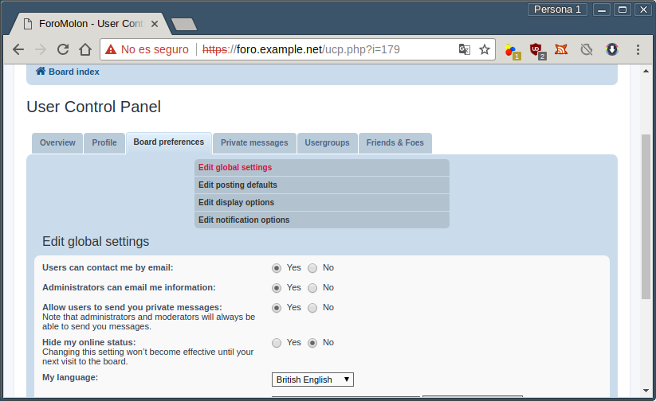

7.2.2.3.8. Foro¶
Una de las aplicaciones web más recurrentes y utilizadas son los foros que han usurpado en gran medida la función que antiguamente cumplían las listas de correo y las popularmente conocidas news. Hay dos aplicaciones que se usan mayoritariamente:
7.2.2.3.8.1. Preliminares¶
Como en todos los casos anteriores partimos de un servidor nginx
instalado con soporte para contenido dinámico y MySQL.
Reservaremos el nombre foro.example.net para phpbb y
albergaremos los ficheros de la aplicación bajo /srv/www/foro. Además,
requerimos la instalación de otros módulos de PHP:
# apt-get install php-{gd,json,xml,zip,imagick}
y una base de datos para para la aplicación:
# mysql
mysql> CREATE DATABASE phpbb;
mysql> GRANT ALL PRIVILEGES ON phpbb.* TO 'usuariocomplicado'@'localhost' IDENTIFIED BY 'contraseñadificil';
Nota
Como para el resto de aplicaciones es conveniente que usuario y contraseña sean largos y complicados, ya que sólo requeriremos recordarlos en el momento de la instalación.
Por último debe descargarse y descomprimirse phpbb en
/srv/www/foro:
# mkdir -p /srv/www/foro
# wget -qO - https://www.phpbb.com/files/release/phpBB-3.2.2.tar.bz2 | tar -C /srv/www/foro -jxvf - --strip-component=1
# chown -R root:root /srv/www/foro
# chown -R www-data /srv/www/foro/{config.php,store,cache,files,images/avatars/upload}
Advertencia
Obsérvese que el enlace al software contiene la versión, así que es probable que este número cambie en el momento de su lectura, Compruebe cuál es el enlace en la página de descargas.
Opcionalmente, puede descargarse un módulo de idioma. Esto, sin embargo, lo haremos más adelante.
7.2.2.3.8.2. Configuración en nginx¶
Basta con que creemos un fichero de sitio con la
siguiente configuración:
server {
listen 80;
listen 443 ssl;
server_name foro.example.net;
include snippets/snakeoil.conf;
root /srv/www/foro;
try_files $uri $uri/ =404;
index index.php index.html index.htm;
if ($https != "on") {
return 301 https://$host/$request_uri;
}
location ~ \.php$ {
include snippets/fastcgi-php.conf;
fastcgi_pass php;
}
location /install/app.php {
try_files $uri $uri/ /install/app.php$is_args$args;
}
location ~ /(config\.php|common\.php|cache|files|images/avatars/upload|includes|(?<!ext/)phpbb|store|vendor) {
internal;
}
location ~* \.(gif|jpe?g|png|css)$ {
expires max;
}
}
7.2.2.3.8.3. Instalación¶
Hecho todo lo anterior, basta con visitar con un navegador gráfico la dirección:
http://foro.example.net/install
y contestar a las preguntas. Acaba la instalación, es necesario eliminar el
directorio install:
# rm -rf /srv/www/foro/install
Idioma
Adicionalmente, podemos instalar el paquete de idioma para que el foro hable en castellano. Esto paquetes pueden descargarse del sitio de la aplicación, aunque desgraciadamente sólo está en formato zip por lo que requeriremos:
# apt-get install unzip
Hecho lo cual y descargado el paquete, podemos descomprimirlo dentro de
/srv/www/foro1:
# ln -s foro /srv/www/spanish_formal_honorifics_3_2_2
# unzip -d /srv/www spanish_formal_honorifics_3_2_2.zip
# rm -f spanish_formal_honorifics_3_2_2
Esta operación, sin embargo, no completa la instalación, ya que hay que
instalarlo de forma efectiva en el Panel de Administración. Para ello, hay
que dirigirse a Customise>Language packs:
y hacer efectiva la instalación del paquete de idioma, que debe aparecer en la
lista después de haber hecho la descopresión. A continuación puede hacerse que
tal idioma sea la lengua por defecto en General>Board Settings:
Esto es independiente de que cada usuario en su panel de control pueda usar el idioma que más le convenga (en nuestra instalación sólo podrá elegir entre inglés o castellano, porque no hemos instalado otros). De hecho, el panel de administración lo seguimos viendo en inglés, porque el administrador sigue con este idioma como su idioma preferido. Si vamos a su panel de control (para lo cual hay que salir del panel de administración), veremos cómo cambiarlo:
Advertencia
Si tras la instalación comprueba que el foro no funciona bien (no puede iniciar sesión, no puede hacer ningún registro de usuario, etc.), asegúrese de borrar totalmente las cookies.
Notas al pie
- 1
Como unzip carece de la opción
-strip-componentde tar, es algo más lioso.